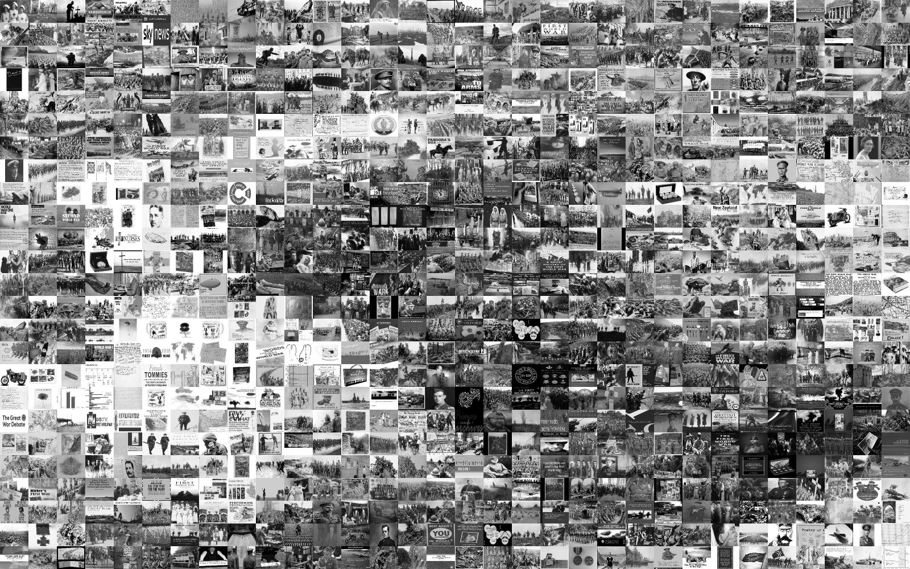
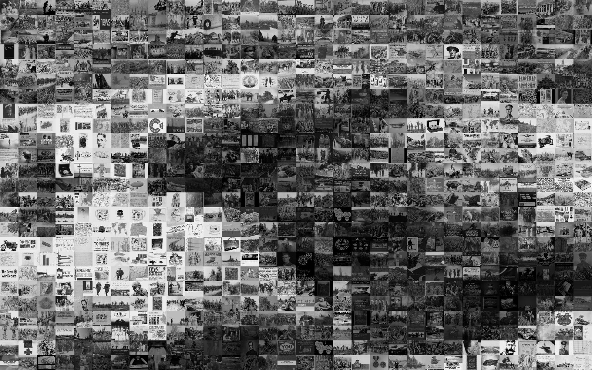

Photomosiac generator
In my U.S. History class, we were assigned to create a photomosaic relating to World War 1. For anyone who doesn't know what it is, it's basically a larger image made up of smaller ones, like the one in the thumbnail for this page.
Anyways, I decided to have a little fun with this and make the computer do it for me on a scale much bigger than I could ever hope to do. I started with the base image below:

Now I needed a quick way to download the first few hundred search results for World War 1 on Google. For this, I used this python library to get the first few hundred images that pop up. The program ran out of images after it downloaded roughly 900 of them.
Then I sliced the base image into rectangular regions with a total of 32 across and 25 down. These subsections were sorted from lowest to highest average brightness. The downloaded images were sorted in a similar fashion. The algorithm that follows is nothing complicated: each downloaded image was then matched with a subsection of similar brightness index. This is the result:
It seems to work, but not well enough. My theory is that the distribution of brightnesses in the downloaded images is too far from that of the base image subsections. In an attempt to account for this, I adjusted the brightness of each downloaded image to better match the base image. This produces a more well-defined result.
However, the original image still doesn't come through clearly enough. So, I blended it with the original image just a bit:

One final idea I had was to duplicate each downloaded image 10 times so that we can have an even more well-defined photomosaic. This has the unfortunate effect of causing the same images to cluster around each other because they have similar brightness. But the final result is good enough that I think it's worth it.

We were also required to make a second photomosaic. My program can't sort with colors, so I just blended the colored base image more aggressively and still got this good result:

One final note: these images are at a decreased resolution so the webpage loads more quickly, so that is why it may be difficult to distinguish individual subimages.